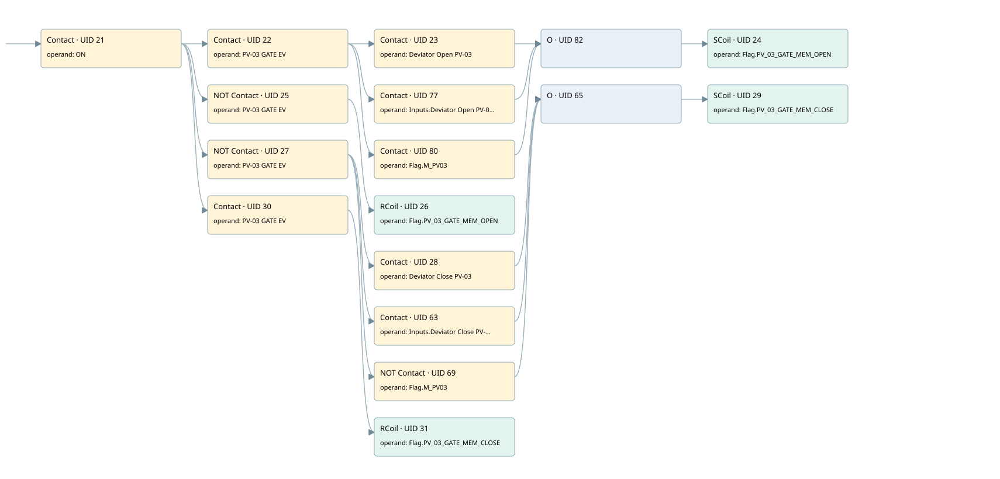

pv03
r1 scraps gate 2 · 검색 색인 순서 15 · 원본 내부 NID 추정 15
백업 PLF 원본의 2844510 바이트 위치에서 복원한 XML. 검색 문서 1925의 객체 키 16102200ca3d000000000000와 연결했다. 이름 해석 15/15개. 남은 RefId는 상수 또는 미해석 참조다.
연결 구조 다시 그리기
원본 Part/PCon/Wire를 이용한 연결도다. TIA 화면의 래더 배치 또는 실행 결과를 재현한 그림은 아니다. 핀 연결은 아래 표와 원본 XML을 기준으로 읽는다. 노드 위에 마우스를 두면 피연산자 이름을 볼 수 있다.

접점·코일·블록과 피연산자
| Part UID | Gate | Negated 핀 | 연결 피연산자 |
|---|---|---|---|
| 21 | Contact | operand = ON | |
| 22 | Contact | operand = PV-03 GATE EV | |
| 23 | Contact | operand = Deviator Open PV-03 | |
| 77 | Contact | operand = Inputs.Deviator Open PV-03 | |
| 80 | Contact | operand = Flag.M_PV03 | |
| 82 | O | ||
| 24 | SCoil | operand = Flag.PV_03_GATE_MEM_OPEN | |
| 25 | Contact | operand | operand = PV-03 GATE EV |
| 26 | RCoil | operand = Flag.PV_03_GATE_MEM_OPEN | |
| 27 | Contact | operand | operand = PV-03 GATE EV |
| 28 | Contact | operand = Deviator Close PV-03 | |
| 63 | Contact | operand = Inputs.Deviator Close PV-03 | |
| 69 | Contact | operand | operand = Flag.M_PV03 |
| 65 | O | ||
| 29 | SCoil | operand = Flag.PV_03_GATE_MEM_CLOSE | |
| 30 | Contact | operand = PV-03 GATE EV | |
| 31 | RCoil | operand = Flag.PV_03_GATE_MEM_CLOSE |
접점 경로를 펼친 조건식
Contact·O/A·비교기의 원본 연결을 읽기 쉽게 펼친 보조 해석이다. POWER는 전원 레일 시작을 뜻한다. 호출 블록·에지·타이머의 내부 동작과 다중 쓰기 순서는 이 표로 실행 검증하지 않았다. 미해석 핀과 RefId는 원문 연결표에서 확인한다.
| UID | 동작 | 대상 | 원본 접점 경로 | 내용 |
|---|---|---|---|---|
| 24 | SCoil | Flag.PV_03_GATE_MEM_OPEN | (((ON AND PV-03 GATE EV) AND Deviator Open PV-03) OR ((ON AND PV-03 GATE EV) AND Inputs.Deviator Open PV-03) OR ((ON AND PV-03 GATE EV) AND Flag.M_PV03)) | 조건 성립 시 Set |
| 26 | RCoil | Flag.PV_03_GATE_MEM_OPEN | (ON AND NOT [PV-03 GATE EV]) | 조건 성립 시 Reset |
| 29 | SCoil | Flag.PV_03_GATE_MEM_CLOSE | (((ON AND NOT [PV-03 GATE EV]) AND Deviator Close PV-03) OR ((ON AND NOT [PV-03 GATE EV]) AND Inputs.Deviator Close PV-03) OR ((ON AND NOT [PV-03 GATE EV]) AND NOT [Flag.M_PV03])) | 조건 성립 시 Set |
| 31 | RCoil | Flag.PV_03_GATE_MEM_CLOSE | (ON AND PV-03 GATE EV) | 조건 성립 시 Reset |
원본 배선 연결
| Wire UID | 동일 Wire 연결 끝점 |
|---|---|
| 43 | Powerrail {} ↔ Part 21.in |
| 44 | ORef 32 (ON) ↔ Part 21.operand |
| 45 | Part 21.out ↔ Part 22.in ↔ Part 25.in ↔ Part 27.in ↔ Part 30.in |
| 46 | ORef 33 (PV-03 GATE EV) ↔ Part 22.operand |
| 75 | Part 22.out ↔ Part 23.in ↔ Part 77.in ↔ Part 80.in |
| 48 | ORef 34 (Deviator Open PV-03) ↔ Part 23.operand |
| 85 | Part 23.out ↔ Part 82.in1 |
| 76 | ORef 78 (Inputs.Deviator Open PV-03) ↔ Part 77.operand |
| 83 | Part 77.out ↔ Part 82.in2 |
| 79 | ORef 81 (Flag.M_PV03) ↔ Part 80.operand |
| 84 | Part 80.out ↔ Part 82.in3 |
| 86 | Part 82.out ↔ Part 24.in |
| 50 | ORef 35 (Flag.PV_03_GATE_MEM_OPEN) ↔ Part 24.operand |
| 51 | ORef 36 (PV-03 GATE EV) ↔ Part 25.operand |
| 52 | Part 25.out ↔ Part 26.in |
| 53 | ORef 37 (Flag.PV_03_GATE_MEM_OPEN) ↔ Part 26.operand |
| 54 | ORef 38 (PV-03 GATE EV) ↔ Part 27.operand |
| 55 | Part 27.out ↔ Part 28.in ↔ Part 63.in ↔ Part 69.in |
| 56 | ORef 39 (Deviator Close PV-03) ↔ Part 28.operand |
| 57 | Part 28.out ↔ Part 65.in1 |
| 62 | ORef 64 (Inputs.Deviator Close PV-03) ↔ Part 63.operand |
| 66 | Part 63.out ↔ Part 65.in2 |
| 73 | ORef 74 (Flag.M_PV03) ↔ Part 69.operand |
| 72 | Part 69.out ↔ Part 65.in3 |
| 67 | Part 65.out ↔ Part 29.in |
| 58 | ORef 40 (Flag.PV_03_GATE_MEM_CLOSE) ↔ Part 29.operand |
| 59 | ORef 41 (PV-03 GATE EV) ↔ Part 30.operand |
| 60 | Part 30.out ↔ Part 31.in |
| 61 | ORef 42 (Flag.PV_03_GATE_MEM_CLOSE) ↔ Part 31.operand |
식별자 해석 근거 15개
| ORef UID | RefId | 이름 | IdentXmlPart 파일 | 해석 방법 |
|---|---|---|---|---|
| 32 | 1 | ON | 0607-IdentXmlPart.xml | UID/RID + search-text + NID agreement |
| 33 | 145 | PV-03 GATE EV | 0607-IdentXmlPart.xml | UID/RID + search-text + NID agreement |
| 34 | 146 | Deviator Open PV-03 | 0607-IdentXmlPart.xml | UID/RID + search-text + NID agreement |
| 78 | 154 | Inputs.Deviator Open PV-03 | 0609-IdentXmlPart.xml | UID/RID + search-text + NID agreement |
| 81 | 153 | Flag.M_PV03 | 0609-IdentXmlPart.xml | UID/RID + search-text + NID agreement |
| 35 | 147 | Flag.PV_03_GATE_MEM_OPEN | 0609-IdentXmlPart.xml | UID/RID + search-text + NID agreement |
| 36 | 145 | PV-03 GATE EV | 0607-IdentXmlPart.xml | UID/RID + search-text + NID agreement |
| 37 | 147 | Flag.PV_03_GATE_MEM_OPEN | 0609-IdentXmlPart.xml | UID/RID + search-text + NID agreement |
| 38 | 145 | PV-03 GATE EV | 0607-IdentXmlPart.xml | UID/RID + search-text + NID agreement |
| 39 | 148 | Deviator Close PV-03 | 0607-IdentXmlPart.xml | UID/RID + search-text + NID agreement |
| 64 | 151 | Inputs.Deviator Close PV-03 | 0609-IdentXmlPart.xml | UID/RID + search-text + NID agreement |
| 74 | 153 | Flag.M_PV03 | 0609-IdentXmlPart.xml | UID/RID + search-text + NID agreement |
| 40 | 149 | Flag.PV_03_GATE_MEM_CLOSE | 0609-IdentXmlPart.xml | UID/RID + search-text + NID agreement |
| 41 | 145 | PV-03 GATE EV | 0607-IdentXmlPart.xml | UID/RID + search-text + NID agreement |
| 42 | 149 | Flag.PV_03_GATE_MEM_CLOSE | 0609-IdentXmlPart.xml | UID/RID + search-text + NID agreement |
검색 코드 보조 자료
참조 명칭을 찾기 위한 자료이며 실행 순서나 AND/OR 관계는 위 연결표로 확인한다.
"on" "pv-03 gate ev" "deviator open pv-03" "flag".pv_03_gate_mem_open "pv-03 gate ev" "flag".pv_03_gate_mem_open "pv-03 gate ev" "deviator close pv-03" "flag".pv_03_gate_mem_close "inputs"."deviator close pv-03" "flag".m_pv03 "pv-03 gate ev" "flag".pv_03_gate_mem_close "inputs"."deviator open pv-03" "flag".m_pv03